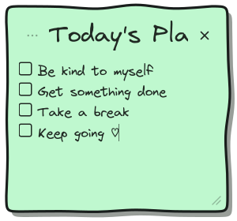
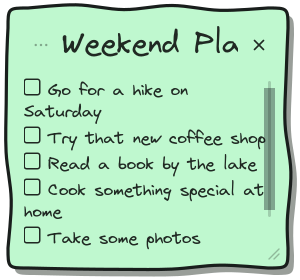
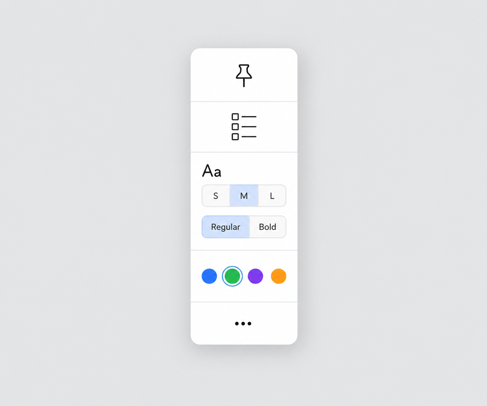
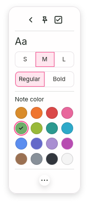
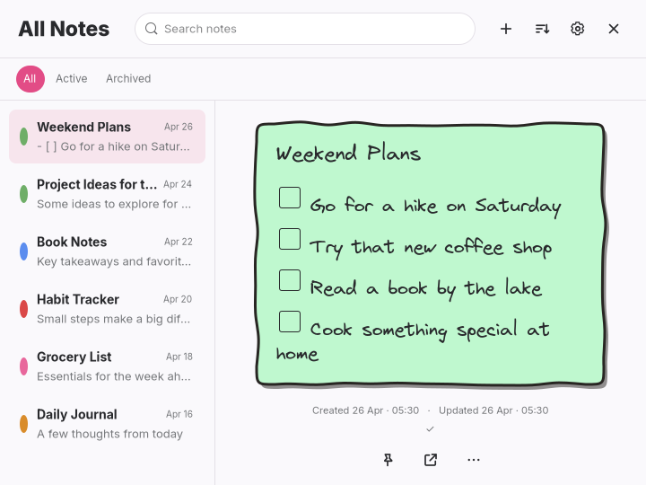

Playful visual review
Latest correction: sidebar line and separate selected-row dividers. Open this fresh GTK gallery for the current review.
Playful is approved after the sidebar correction. Minimal Light is now authorized; Minimal Dark has not started. Paper remains preserved.
October 1, 2026. These are actual GTK renders with disposable notes. Click an image to inspect its original pixels. Verification and remaining differences.
All Notes and its reference
 Original Playful reference, same six Weekend Plans items
Original Playful reference, same six Weekend Plans items Updated GTK, 720×540. Long title, saved dates and selected row.
Updated GTK, 720×540. Long title, saved dates and selected row.The larger title and compact body let all six items fit. The sidebar divider stops at 240px; 24px filters, round tag dots and 11px snippets keep the chrome compact.
Individual reference content
 Original Today's Plan reference
Original Today's Plan reference GTK Today's Plan, 352×376
GTK Today's Plan, 352×376
GTK Today's Plan, 300×280The same Weekend Plans note at both sizes
 GTK Weekend Plans, 352×376
GTK Weekend Plans, 352×376
GTK Weekend Plans, 300×280. Wrapped content scrolls.Open tools

Original tools reference
GTK individual tools, 180×412 native surface GTK All Notes More, 263×487 native surface
GTK All Notes More, 263×487 native surfacePopover captures have separate native surfaces. Opening the panel preserves both 352×376 and 300×280 note dimensions. Pin still means Always open in individual tools and ordering in All Notes.
Provisional typography
| Text | Small | Medium | Large |
|---|
| Title | 27px | 30px | 33px |
| Body | 14px | 17px | 20px |
Virgil by default; Inter and JetBrains Mono remain global Settings choices. Regular is 400, Bold is 700. Chrome uses Inter: heading 23px/800, sidebar titles 14px/700, snippets 11px, dates 10px. These choices await Playful review.
Remaining reference differences
Virgil differs from the mock handwriting. The smaller body leaves more empty space, especially with four items. The title entry scrolls at the minimum width and long content wraps and scrolls vertically. The mock's title underlines and decorative note-face pin badge are omitted under the agreed behavior. The toolbar uses the existing compact layout with sixteen colors.
Before and after Playful

Before this Playful pass, 720×540After this Playful pass, 720×540Paper and Minimal regression captures
These captures verify preserved appearances. Neither Minimal theme was polished or started. Main/default-note/tools were inspected before and after. Live hover and scrollbar fade cause some capture differences; all three other-theme tools and Paper's individual note were pixel-identical.
Paper, regression only
Before note · After note · Before tools · After tools
Minimal Light, regression only
Before note · After note · Before tools · After tools
Minimal Dark, regression only
 Before, 720×540
Before, 720×540 After, 720×540
After, 720×540Before note · After note · Before tools · After tools
Verification
Formatting, 22 non-display tests, strict Clippy, release build and diff checks pass. The existing GTK shared-editor regression also passes. Disposable GTK checks verify actual title/body sizes in both editors, weight, sixteen colors with persistence, three global fonts, exact preview sizes and tools preserving note dimensions.
Native pointer resizing, Escape, timer and edge checks were not repeated. No desktop configuration changed. Existing uncommitted work is preserved; no commit or push was made.